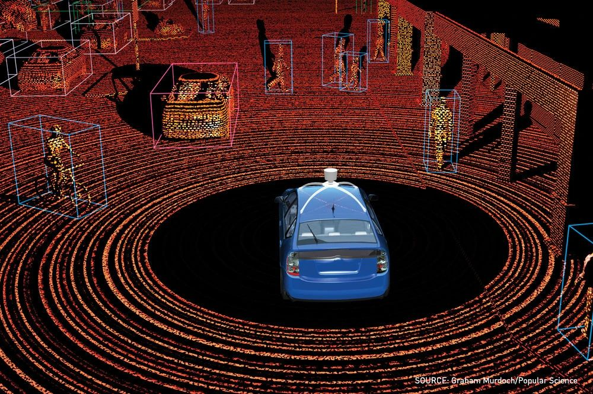

MSc Robotics, University of Genoa, 2026
Robotics and AI engineer, proven in 22 projects
Pick a skill to see the work behind it.

3DETR on KITTI3DTransformer detects vehicles in 3Dleader-follower-px4
~/ros2_ws/swarm$./launch.sh -n 5
5 of 5 drones
QGroundControlstarted
Micro XRCE-DDS agentbridged
PX4 SITL in Gazebo5 drones
election and controller nodesrunning
Leader electedbully algorithm
Project index 22 of 22 shown
- 01Ship-deck landing autonomyOver 95% success in 4 simulated storms, C++ and ROS 2 on PX4Hertel Robotics
- 02Leader-follower PX4 swarmUp to 5 drones from one command, leader re-elected if it failsGitHub
- 03Tracking droneYOLO and OC-SORT on ONNX Runtime, zero-copy frames, follow-me controlGitHub
- 04Marker mission with PlanSys2A PDDL plan drives Nav2 to find 4 ArUco markers and shoot them by IDGitHub
- 05UAV swarm with multi-objective SARSAAn ACC 2018 paper rebuilt from scratch: flocking, waypoints, obstaclesGitHub
- 06ArduPilot flight firmwareBarometer offset across EKF3, SmartRTL overflow fixed, pruning 10x fasterPull request
- 07Robust model predictive controlWritten from scratch, with a wind disturbance observerLAAS-CNRS
- 08Visual-inertial odometry with ZUPTR-VIO in ROS 2, 30 to 50% less drift when the drone stands stillGitHub
- 09LSD-SLAM with OctoMapMonocular SLAM in Docker, keyframes into a 3D occupancy mapGitHub
- 10YOLOs-CPPRestructured into a modular build 8x smaller, with batches and CI/CDContributor
- 11Real-time action recognitionPose3D fine-tuned to over 98% accuracy, pipeline made 100x fasterFreelance
- 123D vehicle detection3DETR extended to the KITTI dataset for vehicles in 3DResearch
- 13Lung tumour segmentationDICOM pipeline and a 3D segmentation model, over 80% accuracyFreelance
- 14Person identification from typingA transformer fused with a prototypical network, near state of the artResearch
- 15Arabic letter speech recognitionThe first speech model for spoken Arabic lettersResearch
- 16Arabic restaurant orderingMatches about 96% of free-text orders to the right menu itemFreelance
- 17US flight data analysisWhich carriers did best from 2010 to 2019, and howData study
- 18Automated customer serviceCall handling and call-state tracking for a company in GermanyFreelance
- 19Smart shipment APIPacks boxes into ships for the least wasted space, with a 3D web viewFreelance
- 20Adaptive AUTOSAR gatewaySafety-critical C++ for Honda, verified on target hardware in JapanAppraid-Tech
- 21Bare-metal and real-time firmwaredsPIC33 drivers, rate-monotonic POSIX threads, a Linux kernel moduleMSc
- 22Yocto image for BeagleBoneA per-process CPU and memory logger as a boot-time systemd serviceGitHub
Experience and quick answers
- Robotics software engineer, Hertel Robotics
Ship-deck landing autonomy in C++ and ROS 2 on PX4, remote.
2025 to 2026 - Research collaboration, LAAS-CNRS
Robust MPC and a wind disturbance observer, remote from Toulouse.
2025 to 2026 - Embedded software engineer, Appraid-Tech
Adaptive AUTOSAR in MISRA C++ for Honda; mentored 2 engineers.
2022 to 2024 - Freelance developer and deep learning engineer
Vision, medical imaging, NLP and web apps for clients.
2020 to now
- Start
- Now. My MSc ends in December 2026.
- Work permit
- None needed in Italy: my permit runs to July 2027 and converts outside the quota. Elsewhere, the employer sponsors one.
- Where
- Genoa, remote, or a move within Europe, to Saudi Arabia or Egypt.
- Languages
- Arabic native, English C1, Italian A2.
- Education
- MSc Robotics Engineering, Genoa. BSc Communication and Information Engineering, Zewail City.